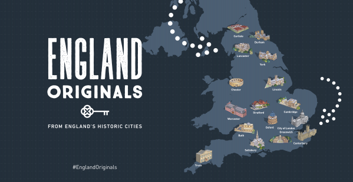

England Originals is a free AR interactive experience that guides visitors to discover England's historic cities. Users can place tabletop 3D models of cities and open AR portals into spaces that are closed to the public.
I upgraded an existing app to the latest version of Unity, implemented a redesigned UI and added new AR features. I implemented AR tabletop tours which allow the user to place an interactive 3D model of a city and tap points of interest to view text, video or audio accompaniments. I also integrated the Mapbox SDK to allow the app to detect how far away from cities users are and unlock location-based features.